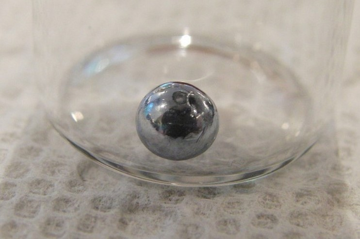

Ливерморий
Ливермо́рий (химический символ — Lv, от лат. Livermorium) — искусственно синтезированный радиоактивный химический элемент 16-й группы (по устаревшей классификации — главной подгруппы шестой группы, VIА) седьмого периода периодической системы химических элементов с атомным номером 116.
Впервые изотоп ливермория получен в 2000 г. Ю. Ц. Оганесяном с сотрудниками (ОИЯИ в сотрудничестве с Ливерморской национальной лабораторией имени Э. Лоуренса) путём бомбардировки 248Cm ускоренными ионами 48Ca; ИЮПАК утвердил открытие элемента в 2011 г., название «Ливерморий» (в честь Ливерморской национальной лаборатории) – в 2012 г.

Изотопы ливермория были получены в результате ядерных реакций.В настоящее время ливерморий не имеет практического применения в промышленности, но его изучение и производство являются важными для развития науки в области ядерной физики. Изучение ливермория может также помочь ученым разработать новые методы и технологии для создания более устойчивых и безопасных ядерных реакторов.